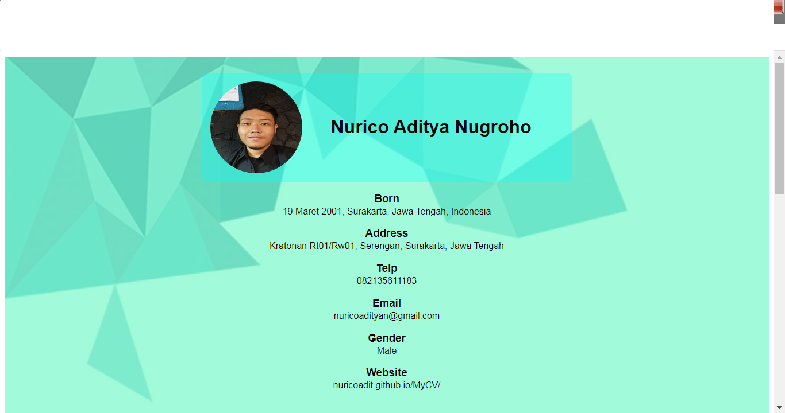
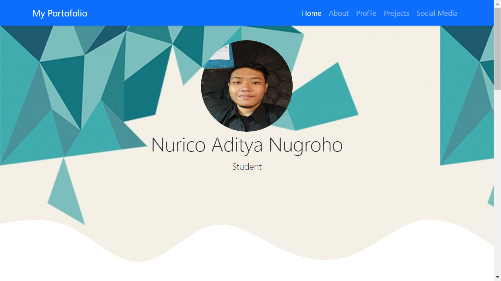

Profile
Name
Nurico Aditya Nugroho
Born
19 Maret 2001, Surakarta, Jawa Tengah, Indonesia
Addres
Kratonan Rt01/Rw01, Serengan, Surakarta, Jawa Tengah
Telp
082135611183
nuricoadityan@gmail.com
Gender
Male
Website
nuricoadit.github.io/mycv/
Projects

Project website berupa CV yang berisi tentang Biodata, Hobi, Pendidikan, dan Pengalaman Kerja
Kunjungi

Project website kedua saya yang merupakan tugas besar mata kuliah WEB IOT 1
Social Media